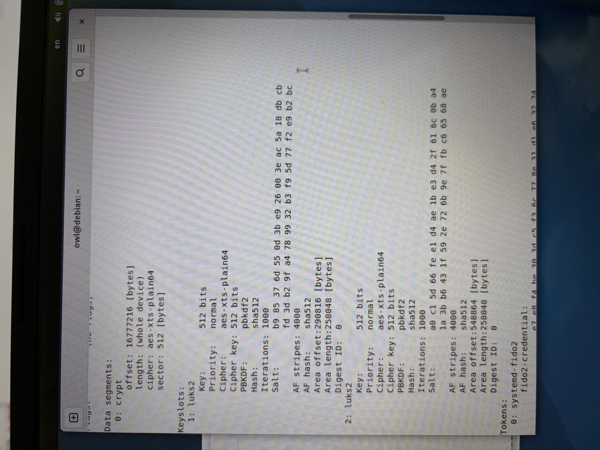
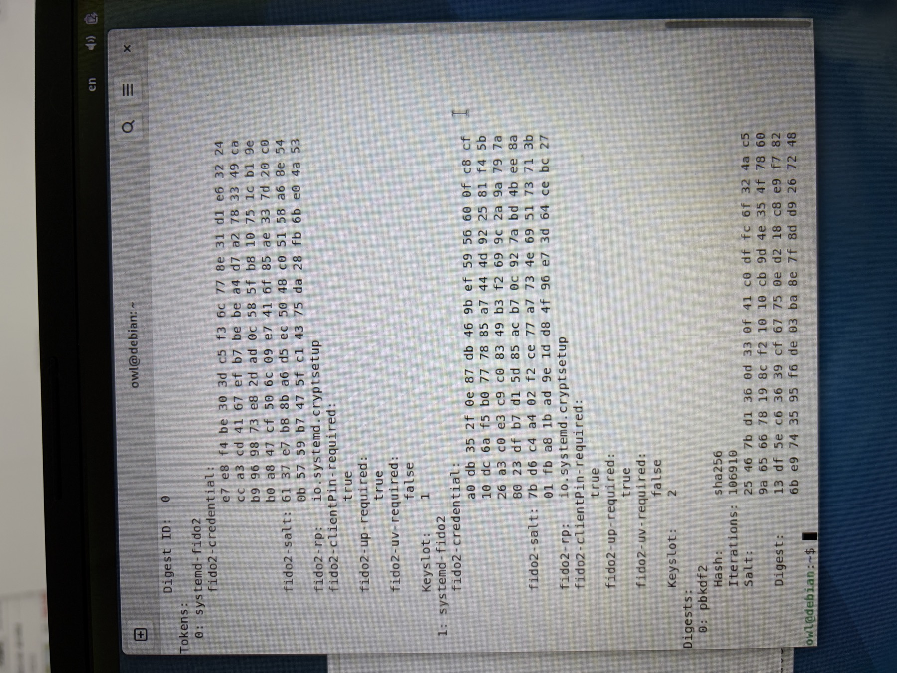

보안 노트북에 굴러다니던 SD카드 하나를, 진짜 "타인 손에 들어가도 못 여는" 저장장치로 만들어봤다.
1. 문서 파일부터 age로 잠그기
먼저 문서 하나하나를 age라는 암호화 도구로 잠갔다. 이번엔 유비키 쪽을 PIV(age-plugin-yubikey) 방식이 아니라 FIDO2의 hmac-secret 기능을 쓰는 age-plugin-fido2-hmac으로 골랐다 — 디스크 잠금(LUKS)이랑 같은 서브시스템, 같은 FIDO2 PIN을 공유하는 방식이라 관리가 한결 깔끔하다.
유비키 #1, #2 둘 다 "수신자(recipient)"로 등록해뒀다. 수신자는 공개키 같은 개념이라 유출돼도 상관없다 — 이 값만 알아서는 아무것도 못 연다. 이렇게 등록해두면, 파일을 암호화할 때 유비키가 필요 없다. 그냥 명령 한 줄이면 원본은 그대로 두고 .age 확장자가 붙은 암호문이 새로 생긴다. 이 암호문은 이제 그냥 알아볼 수 없는 바이너리 덩어리다.
반대로 열 때는 유비키 #1이든 #2든 아무거나 꽂고, PIN 입력하고, 터치까지 해야 한다. 둘 중 하나만 있어도 열리고, 둘 다 잃어버리면 영영 못 연다.
2. SD카드 자체도 통째로 잠그기
여기서 끝내면 아쉽다. 문서 하나하나가 아니라, 그 문서들을 담을 SD카드 자체를 통암호화(LUKS2)했다.
역시 유비키 #1, #2를 FIDO2로 각각 등록해두고, 마지막에 비밀번호(패스프레이즈) 슬롯은 아예 삭제해버렸다. 결과적으로 이 SD카드는 세상 어떤 비밀번호를 쳐도 안 열린다. 오직 등록해둔 유비키 두 개 중 하나로만 열린다.


물론 이것도 트레이드오프다. 유비키 두 개를 동시에 잃어버리면, 이 SD카드 안의 데이터는 영구 복구가 불가능하다. 감수하기로 했다.
3. 그래서, 이중 잠금
방금 만든 .age 암호문 파일들을, 방금 통암호화한 이 SD카드 안에 담았다.
겉껍질(SD카드 자체)도 유비키 없인 못 열고, 그 안의 파일(.age) 하나하나도 유비키 없인 또 못 연다. 이중 잠금.
이 SD카드는 태어나서 단 한 번도 인터넷에 닿은 적이 없다. 처음부터 끝까지 오프라인 노트북에서만 만들고 다뤘다.
설령 이 SD카드가 타인의 손에 들어간다 해도, 껍질부터 못 열고, 어찌어찌 껍질을 뚫었다 쳐도 안의 파일이 또 잠겨있다. 이중으로 잠겨있으니, 둘 다 못 푼다.
이제야 진짜 마음이 놓인다.